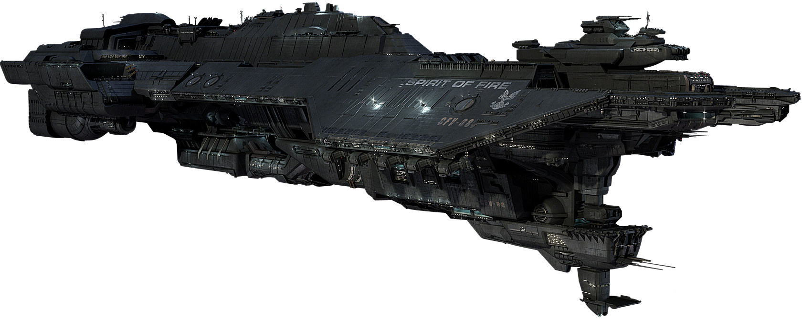

Andrew Wiggin was born in 11 BX to Theresa and John Paul Wiggin. He was their third child, his older siblings being Peter and Valentine. Theresa and John Paul were instructed to conceive a third child by the government to be half as ruthless as Peter, but half as empathetic as Valentine (both of whom were past Battle School candidates). During his youth, Valentine gave him the nickname "Ender" because she could not yet pronounce "Andrew".
His birth illustrated Peter's failure to fulfill a destiny in Battle School, and as a result Peter abused him mercilessly. Valentine always stood up for Ender during these conflicts. Peter would often force Ender to play Buggers and Astronauts, which usually led to Peter beating up Ender.
Ender was isolated on the flight to Battle School by Graff. His first enemy was Bernard, who bullied Shen often. He befriended Shen by standing up for him in an act against Bernard. Ender would later befriend Alai, who at the time was Bernard's best friend. This bridged the gap between Ender and Bernard, and the tensions between the two seemed to relax. Before he could get used to the peace, he was transferred into Salamander Army, where he met its commander, Bonzo Madrid.
Bonzo, thinking Ender would only hinder the effectiveness of his army in the Battle Room, banned Ender from participation in all battle practices, thus depriving him of the opportunity to learn how to fight in Zero-G.
International Fleet

The International Fleet, later known as the Interstellar Fleet, was a military organization formed to protect Earth from the Formics after the end of the First Formic War.
After the end of the First Formic War, the nations of the world came together to establish multiple governments, militaries, and leadership positions to defend Earth from future attacks from the Formics. Along with the creation of the Hegemony and the offices of Polemarch and Strategos, the International Fleet was formed to be a military presence in the Solar System, protecting the human race from any hostile aliens who try to invade.
The Fleet, along with the Hegemony, established International Fleet Common as the official language of the International Fleet to unify humanity against the Formics.
Movie
Young Ender Wiggin is recruited by the International Military to lead the fight against the Formics, a genocidal alien race which nearly annihilated the human race in a previous invasion.
This movie is one of my favorites if you wath to buy it click the image below
In the near future, a hostile alien race called the Formics have attacked Earth. If not for the legendary heroics of International Fleet Commander Mazer Rackham (Ben Kingsley), all would have been lost. In preparation for the next attack, the highly esteemed Colonel Hyrum Graff (Harrison Ford) and the International Military are training only the best young minds to find the future Mazer.
Ender Wiggin (Asa Butterfield), a shy but strategically brilliant boy, is recruited to join the elite. Arriving at Battle School, Ender quickly and easily masters increasingly difficult challenges and simulations, distinguishing himself and winning respect amongst his peers. Ender is soon ordained by Graff as the military\u2019s next great hope, resulting in his promotion to Command School. Once there, he\u2019s trained by Mazer Rackham himself to lead his fellow soldiers into an epic battle that will determine the future of Earth and save the human race.
Based on the best-selling, award winning novel, ENDER\u2019S GAME is an epic adventure which stars Asa Butterfield, Hailee Steinfeld, Ben Kingsley, Viola Davis, with Abigail Breslin and Harrison Ford.
Ender's Game Dragon Army Vs Salamander & Leopard
The Battle School was a large space station built in the orbit of Earth. It was designed to train and evaluate children as future commanders in the International Fleet for the imminent battle against the Formics. It included both standard classroom education, and competitive games designed specifically to develop the unique characteristics required of its students. One of the central features of the space station were the Battle Rooms, large microgravity chambers where different Battle School Armies competed.
In many ways, Battle School was like a typical school on Earth. Children took basic classes for mathematics and other studies. In a many more ways, Battle School was very different. The classes were more advanced. Every child in the program were Earth's most intelligent, so that the slowest child at Battle School would be top of their class on Earth.
Ender's Game Final Battle
The Formic Wars were a series of conflicts between the human race and the Formics.[1] The wars began when the hive-minded Formics sent a colonization fleet to Earth,[2] not knowing that sentient life already existed on the planet. Not recognizing the humans as sentient beings, they attempted to terraform the world to their own needs.[1] The humans defended themselves, and managed to destroy the scout ship that was sent ahead of the main fleet.
However, the rest of the fleet eventually made it to the solar system, giving the humans another fight for their lives and their planet. Mazer Rackham destroyed the mothership housing the Hive Queen, ending the Second Invasion.
To prevent Earth from ever being attacked again, the humans sent an invasion fleet to the Formic Homeworld and other Formic colonies to destroy their alien adversaries. The invasion fleet was commanded by Ender Wiggin. Wiggin ended the Formic Wars when he used the Molecular Disruption Device on the Formic's homeworld, almost destroying the species in its entirety.